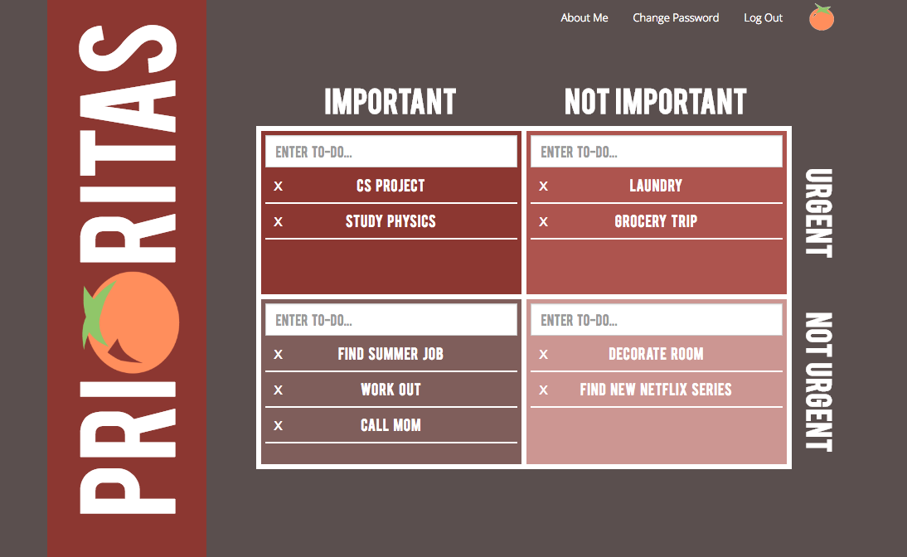
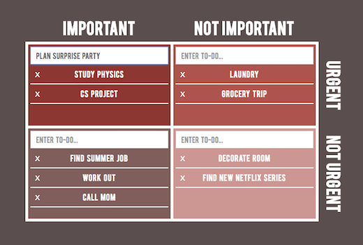

Using Prioritas
On the main page, Prioritas features a priority matrix for keeping track of to-dos according to their level of importance and urgency. Upon clicking on a task, an action window based on the Pomodoro technique pops up, featuring a timer and a field to input the number of desired work cycles to be completed.

Step 1
Add tasks to the grid by typing in the appropriate text field and hitting enter. Top Left: Important things you should do right away; Bottom Left: things you want to get to at some point; Top Right: pressing but trivial tasks; Bottom right: time-wasting, avoidable things.

Step 2
Click on a task to see the Pomodoro pop-up window. At the bottom, you'll see a field with the number of Pomodoros to complete for the task. Type in the number of Pomodoros you'd like to spend working on each long-term project.

Step 3
Time to begin work! Click on a task, hit the start button, and begin working for 25 minutes without pause. A bell will notify you when time is up and your 5-minute break begins. Another bell will sound when your break is over, and the number of remaining Pomodoros will automatically decrease.

f
Step 4
Hooray, you've completed a task! Simply click the delete button to remove it from your list.